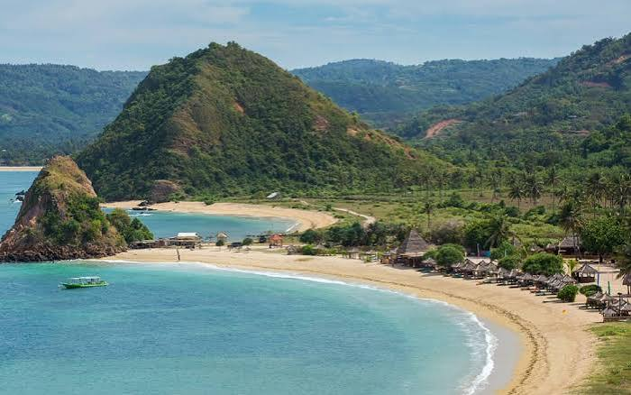
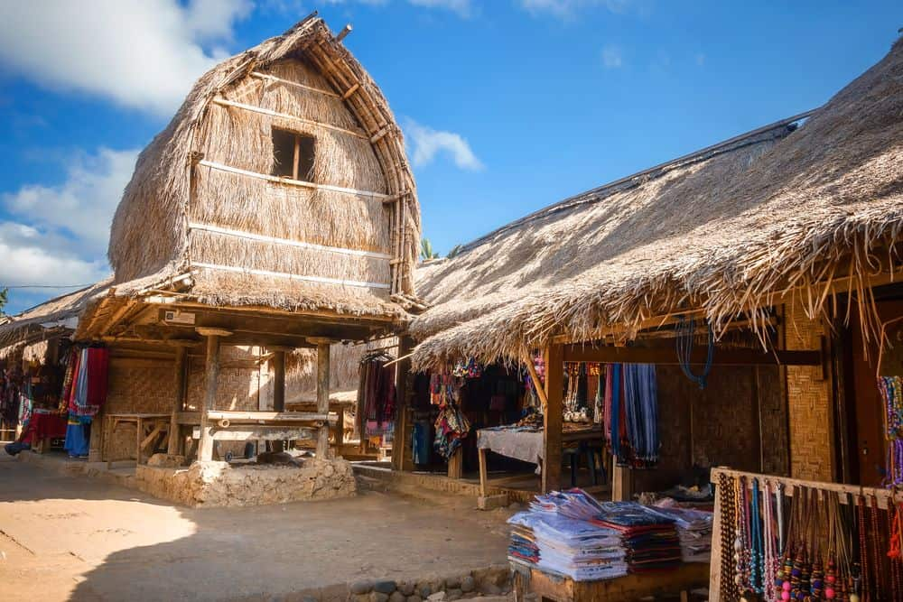
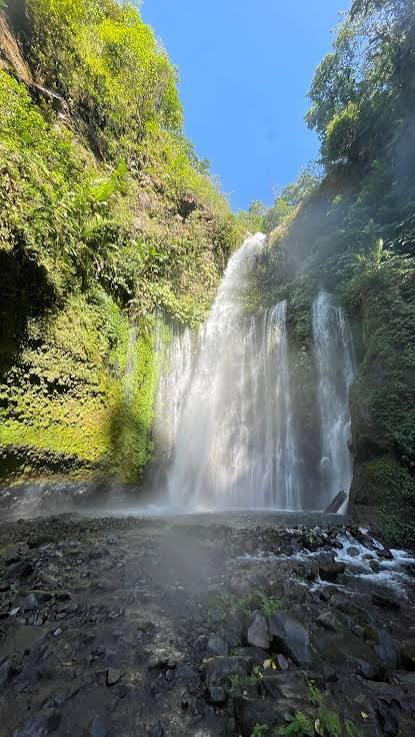

Ayam Taliwang
Ayam berbumbu cabai dan rempah yang dikenal dengan rasa gurih pedas.
Temukan pantai, pulau kecil, dan lanskap khas Lombok yang cocok untuk petualangan maupun bersantai.

Pesisir yang teduh dengan senja berwarna jingga; berjalan santai di tepi Pantai Senggigi menjelang matahari terbenam.
Pulau tropis dengan laut sebening kaca; snorkeling untuk melihat terumbu karang di perairan Gili Trawangan.
Bukit hijau bertemu pesisir berpasir cerah; coba berselancar di salah satu titik ombak kawasan Mandalika.

Rumah tradisional dan suasana kampung Sasak menyimpan cerita turun-temurun; kunjungi rumah adat bersama pemandu lokal.

Air jernih mengalir di tengah rimbun hutan kaki Rinjani; ikuti jalur trekking menuju air terjunnya.
Cicipi hidangan berbumbu khas dan kenali tradisi lokal yang melengkapi perjalanan di Lombok.
Ayam berbumbu cabai dan rempah yang dikenal dengan rasa gurih pedas.
Kangkung dengan sambal tomat pedas dan taburan kacang renyah.
Nasi dengan ayam suwir pedas, kedelai goreng, dan lauk pelengkap.
Lihat langsung kain tenun dan ragam motif yang dibuat oleh perajin lokal.